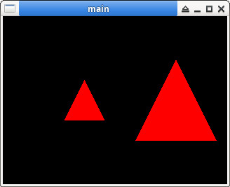

Steward
分享是一種喜悅、更是一種幸福
程式語言 - GTK - v3.0 - OpenGL 1.0 - Translate Position
參考資訊：
https://docs.gtk.org/gtk3/getting_started.html
main.c
#include <math.h>
#include <gtk/gtk.h>
#include <GL/gl.h>
#define W 320
#define H 240
static gboolean render(GtkGLArea *area, GdkGLContext *context, gpointer user_data)
{
glLoadIdentity();
glTranslatef(-1.5f, 0.0f, -10.0f);
glBegin(GL_TRIANGLES);
glColor3f(1.0f, 0.0f, 0.0f);
glVertex3f(0.0f, 1.0f, 0.0f);
glVertex3f(-1.0f, -1.0f, 0.0f);
glVertex3f(1.0f, -1.0f, 0.0f);
glEnd();
glLoadIdentity();
glTranslatef(1.5f, 0.0f, -5.0f);
glBegin(GL_TRIANGLES);
glColor3f(1.0f, 0.0f, 0.0f);
glVertex3f(0.0f, 1.0f, 0.0f);
glVertex3f(-1.0f, -1.0f, 0.0f);
glVertex3f(1.0f, -1.0f, 0.0f);
glEnd();
return TRUE;
}
static void resize(GtkGLArea *area, gint width, gint height, gpointer data)
{
GLdouble nearPlane = 0.1;
GLdouble farPlane = 100.0;
GLdouble top = nearPlane * tan(45.0 * 3.14159 / 360.0);
GLdouble right = top * ((GLfloat)W / (GLfloat)H);
glViewport(0, 0, W, H);
glMatrixMode(GL_PROJECTION);
glFrustum(-right, right, -top, top, nearPlane, farPlane);
glMatrixMode(GL_MODELVIEW);
glLoadIdentity();
}
int main(int argc, char *argv[])
{
gtk_init(&argc, &argv);
setenv("MESA_GL_VERSION_OVERRIDE", "3.2COMPAT", 1);
GtkWidget *window = gtk_window_new(GTK_WINDOW_TOPLEVEL);
gtk_window_set_title(GTK_WINDOW(window), "main");
gtk_window_set_default_size(GTK_WINDOW(window), W, H);
g_signal_connect(window, "destroy", G_CALLBACK(gtk_main_quit), NULL);
GtkWidget *gl_area = gtk_gl_area_new();
gtk_gl_area_set_required_version(GTK_GL_AREA(gl_area), 3, 2);
gtk_gl_area_set_use_es(GTK_GL_AREA(gl_area), FALSE);
g_signal_connect(gl_area, "resize", G_CALLBACK(resize), NULL);
g_signal_connect(gl_area, "render", G_CALLBACK(render), NULL);
gtk_container_add(GTK_CONTAINER(window), gl_area);
gtk_widget_show_all(window);
gtk_main();
return 0;
}
編譯、執行
$ gcc main.c -o main $(pkg-config --libs --cflags gtk+-3.0) -lGL $ ./main
